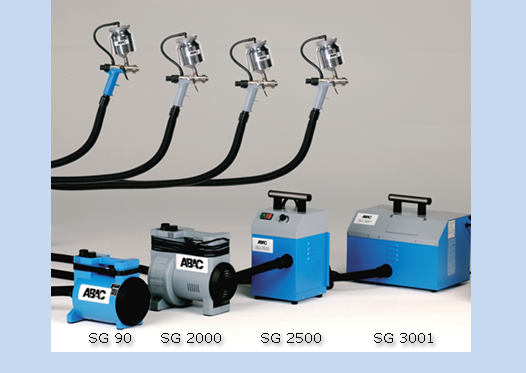

Eine leistungsstarke Produktfamile,
innovative Systemlösungen,
professioneller Service.
Niederdruck-Farbspritzgeräte von ABAC, das bedeutet ein leistungsstarkes Produktspektrum, innovative Systemlösungen und vielfältige Serviceleistungen. Unser Know-how und unsere Erfahrung auf diesem Gebiet (Der Farbzerstäubung mit höchster Effizient beim Farbauftrag mit dem geringsten Farbnebel), zeigen sich sowohl in der Qualität und Zuverlässigkeit unserer Produkte, als auch in vielen entscheidenden innovativen Details. Details, die unseren Kunden aus Handwerk und Industrie helfen, effektiver und damit wirtschaftlicher zu arbeiten. Durch die Erfindung - Entwicklung einer Niederdruck - Farbspritzpistole im Jahr 1947 und der Weiterentwicklung bis zu einem serienreifen Produkt 1948 im Haus CHIRON wurde ein Produkt geschaffen, für die optimale Verbreitung von spritz fähigen Materialien auf Oberflächen mit sehr geringen Farbnebel. Durch Weiterentwicklung einer stufenlosen Regelung der Luftmenge im Jahr 1953 wurde es möglich, nahezu mit allen spritz fähigen Materialien eine charakterliche Oberfläche zu erhalten. Bei der Entwicklung unserer Farbspritzgeräte orientieren wir uns an den Anforderungen des Anwenders. Die Praxis ist der Maßstab. Die Maxime unseres Handelns ist, fundierte Kenntnisse mit großem handwerklichem Geschick umzusetzen. Zum Vorteil unserer Kunden. Beim Gebrauch entsprechend unserer Betriebsanleitung gewähren wir eine Garantie von 2 Jahren.
